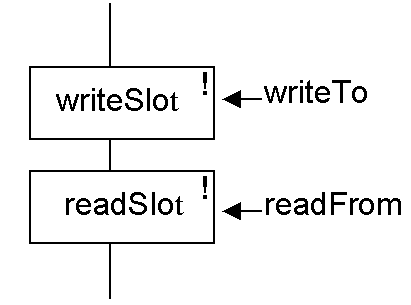

The revisited RadioSlot & BasicTime class
The class diagram of the RadioSlot class, as introduced in waypoint 2, is as follows.
The state of a RadioSlot instance is determined by the state of its four attributes and so if they are written to a file then the state of the instance can be restored when they are read back. To accomplish this two new methods need to be added to the RadioSlot design, as follows.

The writeSlot() method will write the state of the instance to the DataOutputStream writeTo, or throw an IOException if this is not possible. The readSlot() method will read the state of the instance (replacing the existing state) from the DataOutputStream readFrom, or throw an IOException if this is not possible.
The implementation of the writeSlot() method is as follows.
public void writeSlot( DataOutputStream theStream)
throws java.io.IOException {
theStream.writeUTF( this.slotDescription);
theStream.writeInt( this.slotType);
this.startTime.writeTime( theStream);
this.slotDuration.writeTime( theStream);
} // End writeSlot.
The first two lines of the method write the slotDescription and the slotType attributes using the pre-supplied DataOutputStream writeUTF() and writeInt() methods. (The reasons why writeUTF() not writeString() is supplied by Java are very technical and need not be explored here).
It is possible to write an int or a String to a DataOutputStream using pre-supplied methods as int and String are supplied by Java. The startTime and slotDuration attributes are instances of the PlayTime class and so these need to be written by a call of the writeTime() method (comparable to the writeSlot() method) which has been added to an upgraded BasicTime class. (It is added to the BasicTime class and not the PlayTime class as the PlayTime class adds no attributes to the hierarchy.) The implementation of this method is as follows.
public void writeTime( DataOutputStream theStream)
throws java.io.IOException {
theStream.writeInt( this.duration);
} // End writeTime.
A BasicTime instance, and hence a PlayTime instance, has a single int attribute called duration which represents the time in tenths of a second. Accordingly the state of the instance can be written to the stream with a single call of the DataOutputStream writeInt() method.
Accordingly when the RadioSlot writeSlot() method is called a String, followed by three ints is written to the stream. To restore the state of the instance these will have to be read from the stream, using the readSlot() and readTime() methods, as follows.
public void readSlot( DataInputStream theStream)
throws java.io.IOException {
this.slotDescription = theStream.readUTF();
this.slotType = theStream.readInt();
this.startTime.readTime( theStream);
this.slotDuration.readTime( theStream);
} // End readSlot.
public void readTime( DataInputStream theStream)
throws java.io.IOException {
this.duration = theStream.readInt();
} // End readTime.
These read~() methods are, in a sense, the reverse of the corresponding write~() methods and will not be discussed further.
Return to way 6 part 1 Schedule